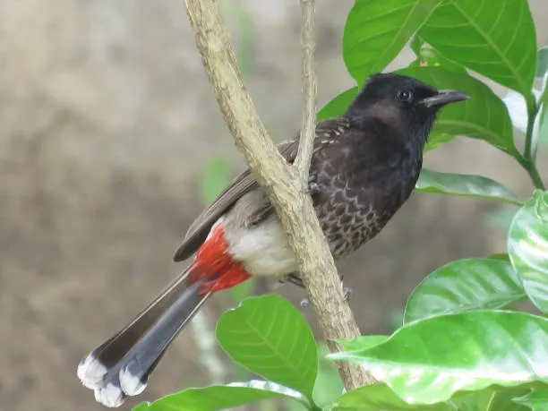

-
Name: Himalayan Monal
The national bird of Nepal, the Himalayan Monal is known for its vibrant plumage and striking iridescent colors. It is found in high-altitude forests and grasslands, primarily in the Himalayas.
-
Name: Satyr Tragopan
This elusive pheasant species, found in the eastern Himalayas, has stunning blue and orange plumage. Known for its shy nature, the Satyr Tragopan is a symbol of Nepal’s mountainous forests.
-
Name: Cheer Pheasant
Native to the Himalayas, the Cheer Pheasant has beautiful iridescent feathers. It is a ground-dwelling bird that thrives in scrub forests and grasslands at high altitudes.
-
Name: Black Stork
A large, elegant bird with striking black and white plumage, often found near rivers and wetlands.
-
Name: White Stork
Recognizable by its white feathers and black wingtips, this migratory bird is associated with wetlands and farmlands.
-
Name: Great Hornbill
A massive and iconic bird with a large yellow casque on its beak, found in dense forests.
-
Name: Eurasian Cuckoo
Known for its distinctive call, this migratory bird lays eggs in the nests of other birds.
-
Name: Indian Peafowl
Famous for its shimmering blue-green plumage and extravagant tail feathers, it is a symbol of beauty.
-
Name: Fire-tailed Sunbird
A small, colorful nectar-feeding bird with a striking red tail, often found in rhododendron forests.
-
Name: Rufous-gorgeted Flycatcher
A small, active bird with a bright rufous throat patch, found in dense forest undergrowth.
-
Name: Asian Green Bee-eater
A slender green bird with a long tail, known for catching flying insects mid-air.
-

Name: Common Kingfisher
A brilliantly blue and orange bird that dives into water to catch fish.
-
Name: Oriental Magpie-robin
A melodious songbird with black and white plumage, often seen in gardens and forests.
-

Name: Red-vented Bulbul
A lively, social bird with a black crest and a distinctive red patch under its tail.
-
Name: Spotted Dove
A gentle, pinkish-brown dove with white spots on its wings, often seen in urban and rural areas.